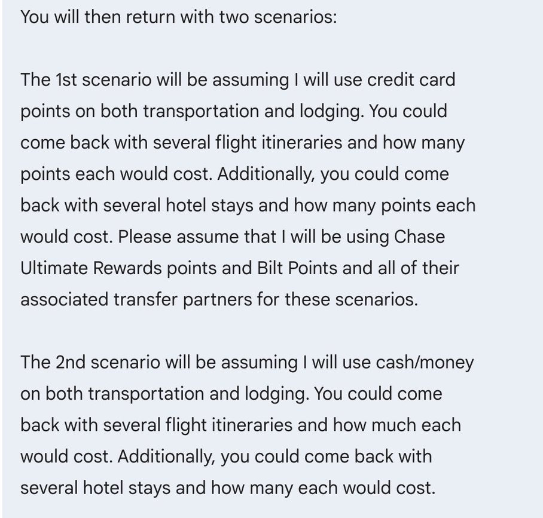
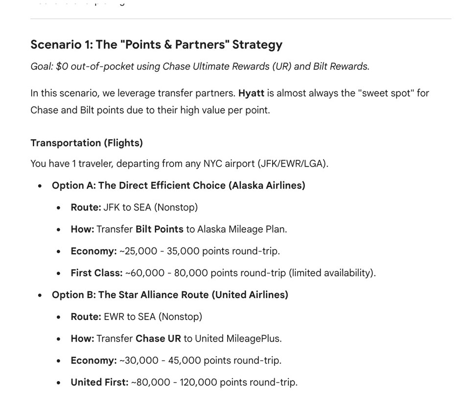
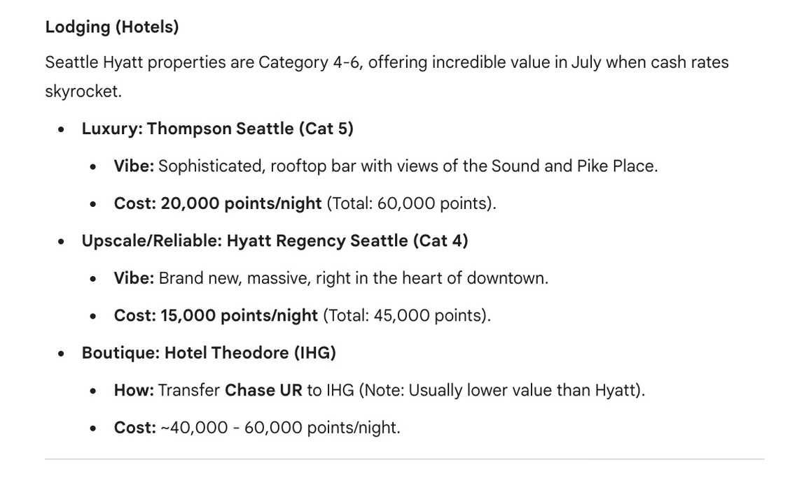
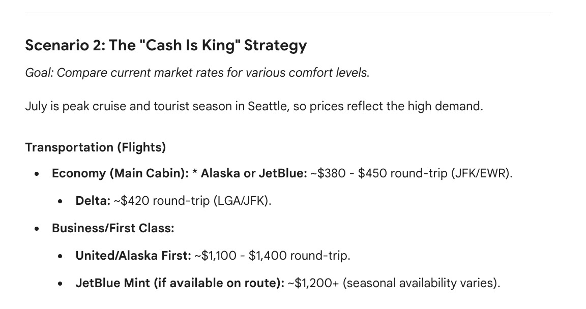
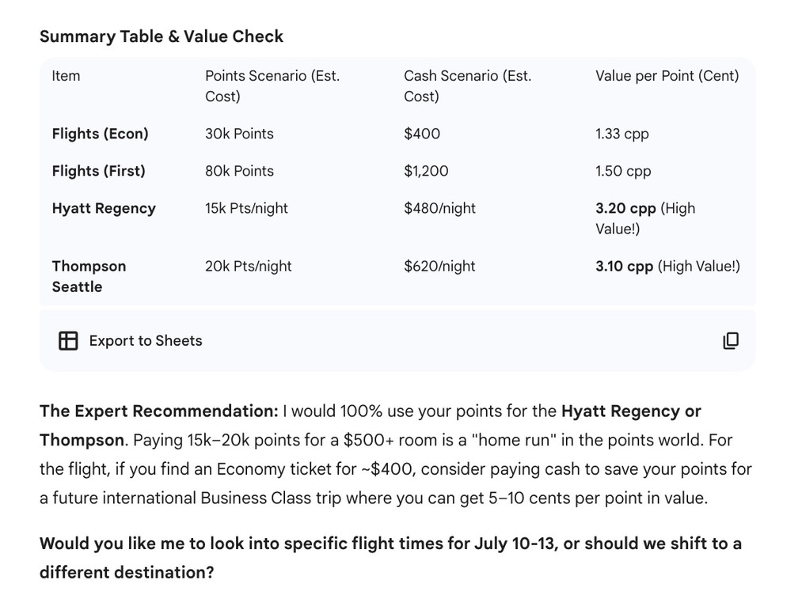

AI Travel Agent
A couple of years ago I had an idea to build a tool that can check offers and prices of different travel options. As an avid credit card points-optimizer, I found it a headache to check all these different airlines, hotel brands, and credit card points programs just to find a bargain for my travel plans.
In the beginning, I knew of very few rewards programs, which led to some not-so-great redemptions of my hard earned points. I remember spending thousands of points on a flight that added an extra stop and 6 hours to my travel time because I just wanted to use my points instead of my cash as a broke college student. With the added fees, it wasn’t even that much cheaper than if I had just flown direct and paid out of pocket.
From these issues, I’ve identified a few ways AI can shoulder the load that comes with planning these trips:
- I didn’t know of all the possible rewards programs I had access to
- I didn’t know if the flight booked through points was more “worth it” than paying with cash
- I didn’t know all of the sneaky costs associated with redeeming rewards
- I didn’t realize how much time it would take to find that optimal redemption opportunity
With this in mind, I created an AI Travel Agent whose goal is to search the internet and essentially do what I would do when planning for a trip.
I gave it what I expected to receive from future prompts. This allows me to compare the costs associated with if I booked with cash vs rewards points. Ideally, it will give me many options for how to travel and stay, across various brands and programs. This gives you as much flexibility as possible.
For this demonstration’s sake, I’ll use the example I had in the original prompt, a 3-day trip to Seattle from NYC. For context, I’m planning on visiting Seattle and the surrounding national parks over the Summer. Although I’m meeting up with friends, I’m booking everything for myself.
First it gives a recommendation for how to use points best. Without this tool, I don’t think I would have considered Alaska Airlines. But, as a transfer partner of the Bilt rewards program, it becomes a great option. It breaks down points/cash scenarios into flights/hotels, so lets see what it gives for hotels.
If you’re at all in the credit card point space, you should already know about Hyatt’s unmatched bargains through their rewards. It’s no surprise that Hyatt is mentioned. But the Thompson, a hotel not through any large brand is also mentioned.

So despite wording this as a points-optimizer, it also does a great job of searching for cash options. This gives you the greatest agency when you eventually book. You can ask it to expand its search as well, giving you more options.
Lastly we have the summary table that combines all of the best options in a table, with their “Value per Point” displayed on the right-most column. I love this last part because it's almost like a dashboard for the different options I have to book this trip through. From here, I decided to fly economy through Alaska Airlines since it was the cheapest. I then decided to stay at the Hyatt Regency after checking the website and loving its amenities and location.